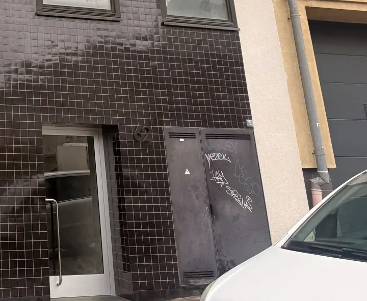

Brno · Žabovřesky 2Graffiti na fasádě nebo zdi chcete mít pryč co nejdřív. Podle materiálu zvolíme čištění, odstranění nebo překrytí a v případě potřeby sjednotíme nátěr, aby plocha působila jednotně. Přijdou pokaždé stejní lidé a po práci uklidíme.
Pošlete fotku detailu i celé plochy a do 24 hodin se vám ozveme. Nacenění je zdarma a nezávazné. Termín, který domluvíme, dodržíme.
Ukázky realizací: 1 zakázka a 2 fotografie. Klepnutím na fotku otevřete celou galerii zakázky.
Každý povrch snese jiný zásah. Nejdřív posoudíme materiál, barvu a stav plochy. Podle toho zvolíme čištění, odstranění nebo překrytí a domluvíme, jestli je potřeba navazující nátěr.
Fasáda a další povrchy vyžadují odlišný přístup. Podle materiálu a jeho stavu zvolíme čištění, odstranění nebo překrytí.
Pokud po zásahu zůstane rozdíl v barvě, domluvíme navazující nátěr a povrch sjednotíme. Celou fasádu obnovíme v rámci nátěrů fasád.
Kdo si s vámi zakázku domluví, ten ji i udělá. Termín potvrdíme předem a po práci uklidíme.
Podle fotografií a materiálu probereme rozsah zásahu.
Zohledníme povrchovou úpravu a stav poškozeného místa.
Použijeme čištění, odstranění nebo překrytí podle podmínek.
Případný navazující nátěr domluvíme podle stavu plochy.
Cena závisí na velikosti a typu graffiti, materiálu a stavu podkladu, zvoleném postupu a případném navazujícím nátěru. Pošlete fotku detailu i celé plochy a přibližné rozměry a připravíme nezávaznou cenu.
Postup a výsledek závisí na materiálu a barvě. Někdy je vhodnější překrytí nebo navazující nátěr.
Fotografii detailu i celé plochy, přibližné rozměry, materiál a místo realizace.
Záleží na materiálu a barvě podkladu. Pokud rozdíl zůstane, domluvíme navazující nátěr a plochu sjednotíme.
Záleží na velikosti plochy, materiálu a zvoleném postupu. Délku práce potvrdíme spolu s cenou.
V celém Brně a okolí do zhruba 20 km, například v Modřicích, Šlapanicích, Kuřimi, Rosicích nebo Slavkově u Brna.
Cenu počítáme podle skutečné plochy a zvoleného postupu. Zakrytí okolí, samotná práce i úklid jsou v ceně, kterou vám předem potvrdíme. Žádné skryté položky.
Pošlete nám stručné zadání. Probereme možnosti a připravíme nabídku podle skutečného rozsahu práce.
Pro první domluvu stačí: materiál a velikost plochy, stáří graffiti, pokud ho znáte, fotografie detailu i celého místa.